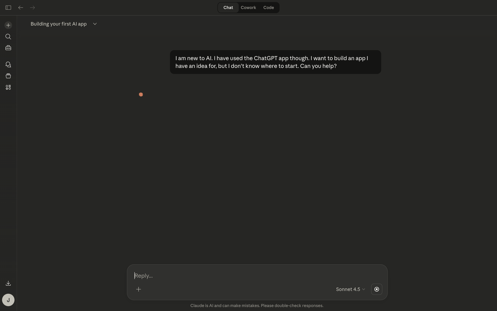
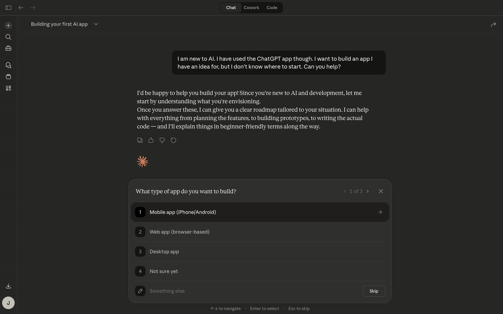
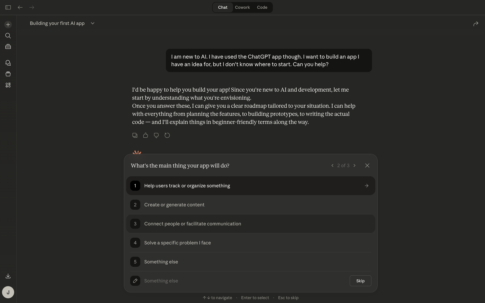
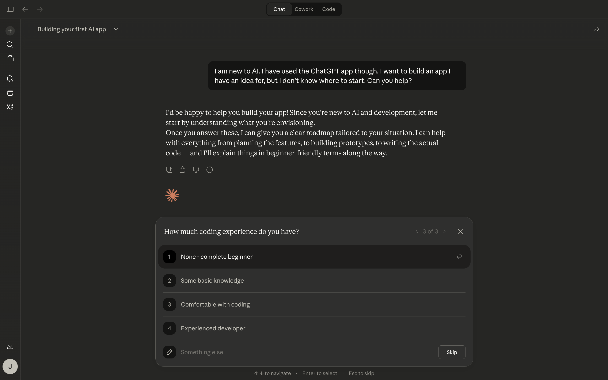
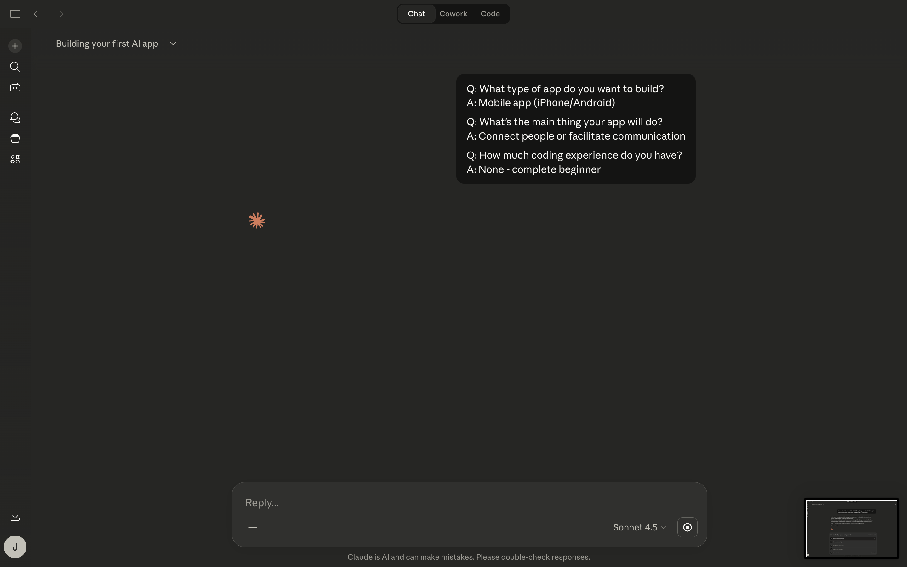
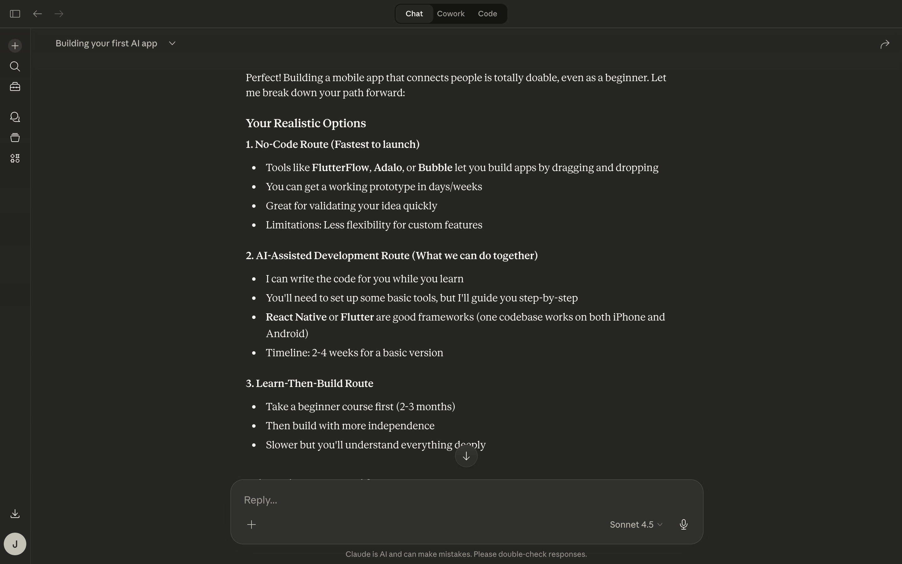
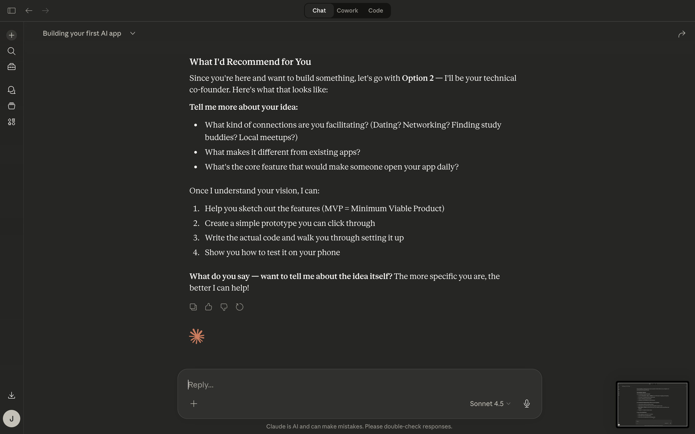

Step 1
Ask for help building your first app
The beginner prompt is simple, honest, and not overloaded with jargon.
These are real screenshots from the Claude Mac app, not AI-made mockups. This set shows a beginner-friendly app-building conversation from first prompt to guided follow-up.
This sequence is useful for people who are new to AI but already have an app idea. It shows how Chat can begin with a plain-English question, guide the user through a few clarifying choices, and then return with a practical next-step answer.
The beginner prompt is simple, honest, and not overloaded with jargon.

The app begins asking structured questions instead of dumping a wall of text.

This screen helps narrow the idea before any coding or tool choices show up.

This keeps the conversation focused on what the app is supposed to help with.

This is one of the most useful beginner steps because it changes the kind of answer you get back.

The short summary acts like a quick check that Claude understood the idea correctly.

This is a good example of Chat helping with decision-making before jumping into build mode.

This is a strong beginner-friendly response because it turns the idea into concrete next questions and actions.